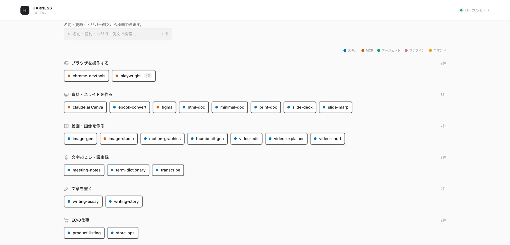
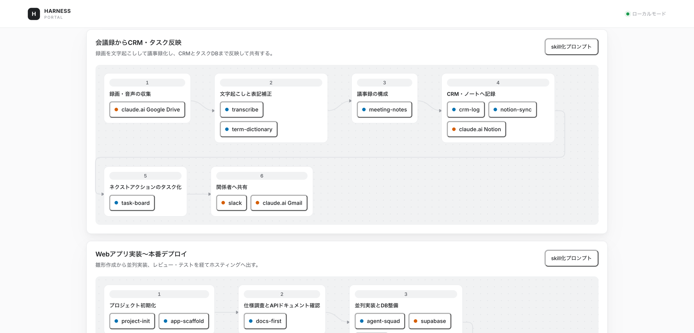
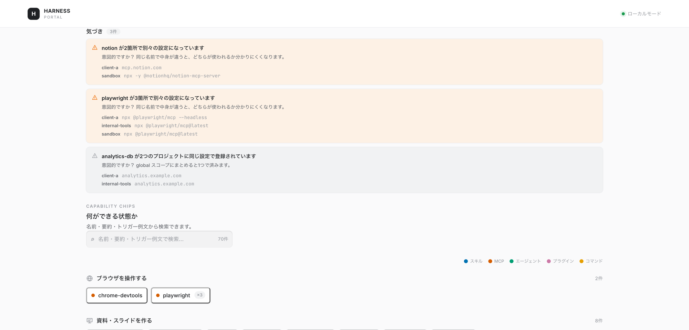

Claude Code harness visualizer
Visualize your Claude Code harness as a capability map.
Claude Code に積んだスキル・MCP サーバー・サブエージェント・プラグインを収集して、「いま何ができる状態か」として並べ直します。増やしたはいいが把握しきれなくなった手持ちを、見える形にするためのツールです。
$ npx harness-portal
インストール不要。macOS / Windows / Linux（WSL）で、PowerShell でも cmd でも同じコマンドです。
How it works
3ステップで完結します。外部のサーバーは使いません。立つのはあなたの端末内の localhost だけです。
~/.claude を allowlist 方式で読みます。読むファイルを明示的に列挙する方式で、書き込みは一切しません。
あなた自身の Claude が各項目にカテゴリを付けます。外部サーバーも API キーも要りません。追加課金もありません。Claude Code にログインしていない場合はキーワード規則で代替します。
localhost にブラウザが開きます。分類とフロー生成で初回は2分ほどかかります。
▸ 走査中 /Users/you/.claude ▸ 収集完了 スキル48 / MCP19 / エージェント4 / プラグイン3 ▸ 分類中 74項目 — Claudeに問い合わせています（1分ほどかかります） ▸ 分類完了 Claudeが付与 ▸ フロー生成中 … ▸ フロー生成完了 10件 ▸ 保存 harness-2026-08-21T02-31-08.417Z.json Harness Portal: http://localhost:4477
What you get
以下はデモ用ハーネス（スキル48・MCP19・エージェント4・プラグイン3）で実際に動かした画面です。Screens from a demo harness.
カテゴリ別に全項目を並べます。名前は省略しません。同じ MCP が複数プロジェクトにあるときは1つにまとめ、登録数をバッジで示します。検索で横断できます。

「この仕事ならこの手順」を、手持ちのツールだけで組み立てます。工程に使える手段が無ければ 「手段なし」 と正直に出します。各フローから、そのまま実装させるための skill化プロンプト（Markdown）を書き出せます。

同じ名前の MCP がプロジェクトごとに別々の設定になっていないか、同じ設定が重複していないかを検出して、「意図的ですか？」と問いかけます。一覧を眺めるだけでは気づけない箇所です。

Private by design
~/.harness/snapshots/ に直近30件を保存します。アカウント登録もログインもありません。